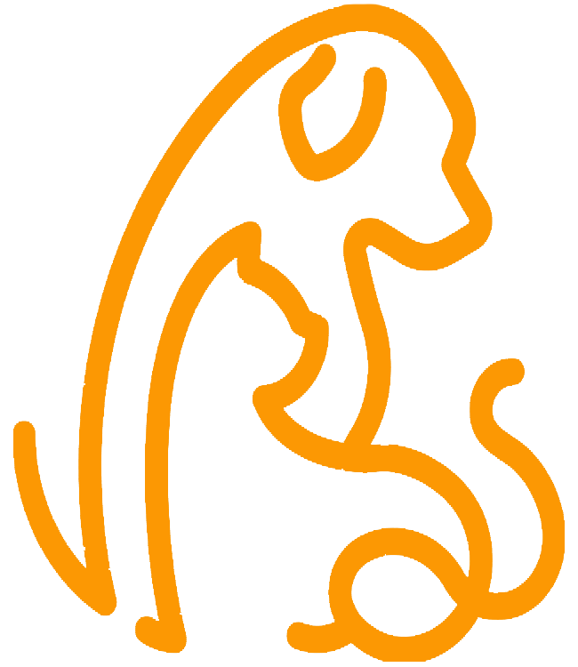
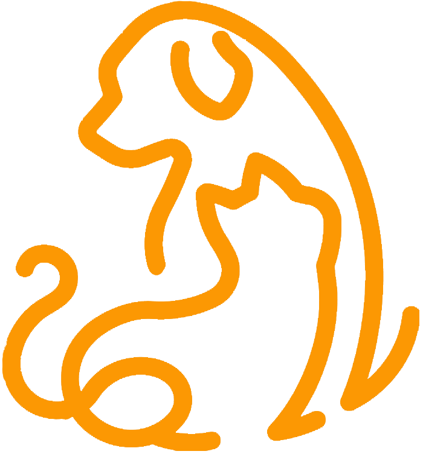
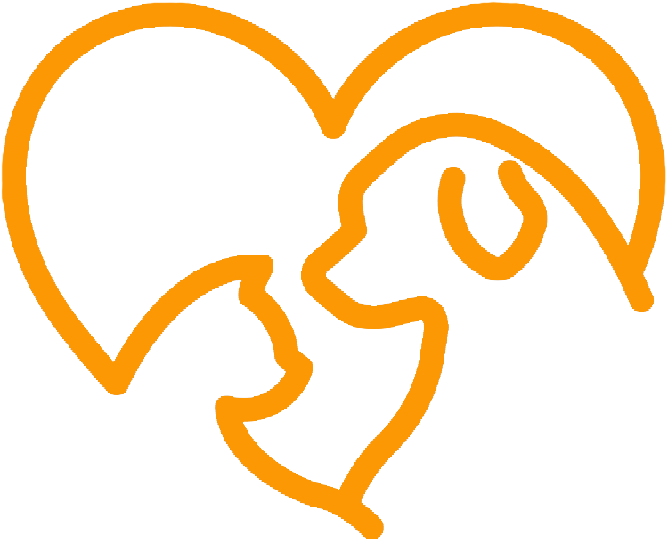
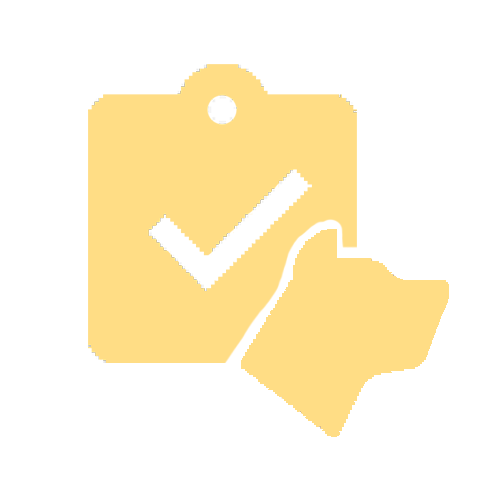

입양 안내
새로운 가족을 만나기위한 과정입니다. 유기동물 입양전 꼭 확인해 주세요!
입양전 체크리스트
-
입양 상담 예약
비윗미 홈페이지에서 '입양 가능동물'을 확인 후 해당 센터에 유선으로 예약, 방문하셔서 상담 및 설문지를 작성합니다.
-

입양 전 교육
입양자로 확정 된 이후 입양 전 2회 교육을 해당 센터에서 의무적으로 이수합니다. ※추가 교육을 희망하시는 분은 각 시의 학습포털에서 '반려동물 입양교육'을 이수해주세요
-

입양 진행
입양은 1~2회 입양 상담 및 개체만남을 통해 진행됩니다. ※입양 후 파양은 불가합니다. 만남을 통해 신중히 결정해 주세요
-

입양 완료 및 후기 공유
입양견과 분양증서를 받습니다. 보호자님과 입양된 반려동물의 행복한 일상을 홈페이지 입양 후기 메뉴에 올려주세요 입양 대기중인 아이들의 입양과 인식 개선에 많은 도움이 됩니다.
입양시 주의 사항
한번 입양 시 파양이 ‘불가’ 합니다. 신중히 결정해주세요.
-
한 동물에게 여러명의 입양희망 신청자가 생길 경우 센터 관리자들이 회의를 거쳐 입양자를 선정하게 됩니다. 이에 동의하셔야 입양신청을 하실 수 있습니다.
-
질병이 발현되지 않을 경우 감염 여부를 확인 할 수 없습니다. 이를 인지하시고 입양을 진행하셔야 하며 입양 후 동물병원에 내원하여 검사를 받으시길 권해드립니다.
-
입양 후 2회 교육은 의무교육으로 반드시 이수하실 수 있어야 분양이 가능합니다.
-
유기동물을 입양 후 파양은 절대적으로 불가 하므로 신중히 결정해 주십시오.

개와 고양이의 수명은 약 15년 정도입니다. 살아가면서 질병도 걸릴 수 있고요. 생활패턴이나 환경이 바뀌더라도 오랜 기간 동안 책임지고 잘 돌보아 줄 수 있나요?
매일 산책을 시켜주거나 함께 있어줄 수 있는 시간이 충분한가요? 개는 물론이고 고양이도 혼자 있으면 외로워하는 사회적 동물입니다.
입양대기 동물들은 동물등록과 중성화수술이 되어 있는 것을 아시나요? 유기동물들은 중성화 수술 및 동물등록 완료 후 입양됩니다.
입양 이후 모니터링 관련 정보 제공에 협조를 해 주실 수 있나요? 센터에서는 입양 인식개선을 위해서 보호자분의 적극적인 입양후기 공유를 요청 드리며, 입양동물 정보제공에도 적극적으로 응해 주시기 바랍니다.